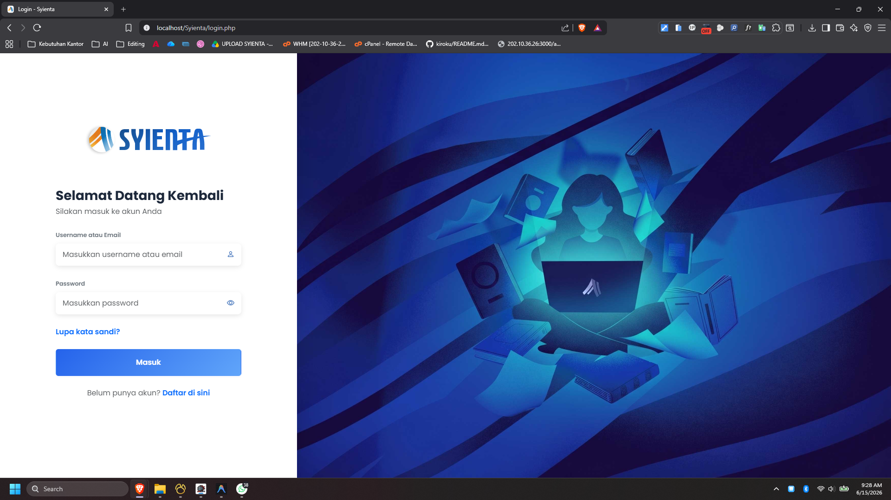

PORTOFOLIO
Proyek Unggulan

Syienta - Sistem Monitoring Kredit
Aplikasi internal PT Bank Nusamba Jabar untuk memantau data pengajuan kredit secara *real-time*, lengkap dengan fitur evaluasi kinerja karyawan di tiap kantor cabang.

JarvisDrive - Sistem Autobackup
Aplikasi desktop pintar yang secara otomatis mencadangkan data karyawan ke server Google Drive secara *real-time* dan dikategorikan per jabatan.

Galeri Desain UI/UX & Sosial Media
Eksplorasi visual dan karya kreatif saya di bidang desain grafis dan tata letak UI/UX yang dikurasi secara lengkap di halaman Pinterest saya.

Video Konten Bank Nusamba
Pengeditan video dan produksi multimedia profesional untuk keperluan promosi, edukasi, dan kampanye digital resmi PT Bank Nusamba Jabar.